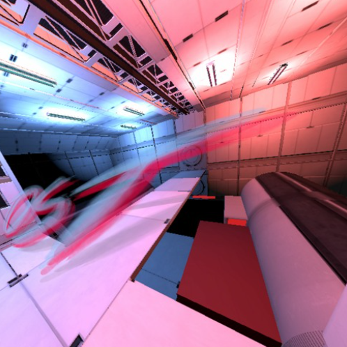

BeatSpeeder
A rhythm game built in Unity as a student team project (2019), originally for the Oculus Quest.
WASD to move · walk past the line to start · left / right click for the blue and red catchers

A rhythm game built in Unity as a student team project (2019), originally for the Oculus Quest.
WASD to move · walk past the line to start · left / right click for the blue and red catchers